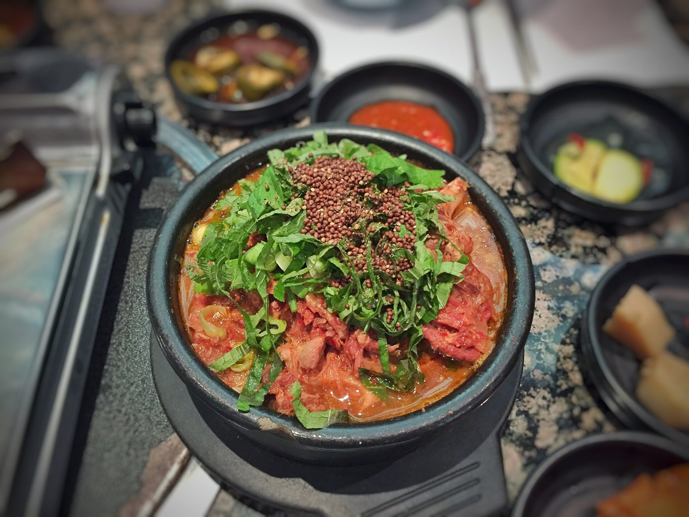

연관 분석 · 함께 나오는 메뉴와 함께 나오지 않는 메뉴
9차시에는 정답표 없이 영화를 비슷한 것끼리 묶었습니다. 오늘도 정답표는 없습니다. 이번에는 당곡고 중식 184일에서 같은 날 함께 나오는 메뉴를 찾습니다.
먼저 기사를 엽니다. 편의점 영수증에서 발견한 규칙 하나가 실제 상품으로 탄생한 이야기입니다.
편의점 본사의 상품 기획 담당자라면 하루 수백만 장의 영수증 중 박카스와 함께 찍힌 상품만 확인하면 됩니다. GS25는 1위 얼음컵, 2위 사이다를 도출했고, 이미 손님들이 세 가지를 따로 사서 섞어 마신다는 사실을 파악했습니다. 이를 동아제약에 제안해 세 가지를 합친 음료를 기획했고, 2025년 6월 25일 ‘얼박사’로 출시했습니다. 두 달 만에 누적 판매량 278만 개를 기록했습니다(파이낸셜뉴스 2025년 9월 24일).
그런데 이런 물음은 편의점 영수증에만 머물지 않습니다. 쿠팡 같은 쇼핑 앱이나 배달 앱, 온라인 서점에서 물건을 고르면 “이 상품을 함께 구매한 고객이 많이 본 상품”이라며 다른 상품을 추천해 주는 화면을 쉽게 볼 수 있기 때문입니다. 우리가 하나를 고를 때 시스템이 “무엇을 함께 살까?”라고 묻고 답을 내놓는 방식, 그 물음에 답하는 방법이 바로 오늘 배울 연관 분석입니다. 연관 분석은 영수증이나 클릭 기록처럼 쌓여 있는 데이터에서 어떤 것들이 함께 자주 등장하는지 찾아내어, 보이지 않던 구매 패턴을 규칙으로 만들어 줍니다.
천만 관객을 넘긴 영화들을 살펴보면 유난히 자주 얼굴을 비추는 배우가 눈에 띕니다. 그런데 그 배우가 출연해서 영화가 천만을 넘긴 것인지, 아니면 원래 여러 영화에 두루 나오는 배우라서 그렇게 보이는 것인지 궁금해집니다. 이 물음에 제대로 답하려면 단순히 횟수만 세어서는 부족하고, 세 가지 숫자가 필요합니다. 오늘 우리는 바로 그 세 숫자를 급식 데이터를 통해 하나씩 살펴보며, 무엇이 함께 나타나고 무엇이 그저 자주 보일 뿐인지 구분하는 연관 분석의 첫걸음을 떼려 합니다.
- ㉮ 제육볶음 + 배추김치
- ㉯ 쇠고기미역국 + 칼슘강화기장밥
- ㉰ 떡볶이 + 배추김치
- ㉱ 순대국 + 배추김치
- ㉮ 배추김치 + 깍두기
- ㉯ 배추김치 + 제육볶음
- ㉰ 친환경현미밥 + 배추김치
- ㉱ 칼슘강화기장밥 + 쇠고기미역국
같은 급식을 먹어도 답은 학생마다 다릅니다. 자주 나오는 반찬은 어느 메뉴와도 자주 겹칩니다. 그래서 함께 나온 횟수만으로는 답을 정할 수 없습니다.
정답은 3절에서 직접 만든 앱으로 확인하고, 5절에 적습니다.
0. 오늘의 목표
연관 분석은 함께 나타나는 항목을 찾는 방법입니다. 하루 중식 식단을 한 건으로 보고, 두 메뉴가 같은 날 함께 나올 정도를 숫자로 나타냅니다.
오늘의 결과물은 둘입니다. 내가 만든 급식 규칙 찾기 앱, 그리고 근거 숫자를 붙여 정리 폼에 적은 급식의 특징 세 가지입니다.
- 지지도·신뢰도·향상도의 분모를 말하고, 손으로 구할 수 있다.
- 신뢰도가 높아도 향상도가 1 근처면 정보가 없다는 것을 급식 규칙으로 보일 수 있다.
- 찾은 규칙을 근거 숫자와 함께 한 줄의 특징으로 적을 수 있다.
1. 개념 이해 — 교과서의 세 숫자
"연관 분석(association analysis)이란 데이터베이스에서 그 안에 존재하는 항목 간의 유용한 연관 규칙을 발견하는 것이다." (157쪽)
"연관 분석은 고객의 구매 내역을 분석하는 데 흔히 쓰여 '장바구니 분석'이라고도 한다." (157쪽)
→ 오늘은 급식 184일을 장바구니로 보고, 같은 날 함께 나온 메뉴의 규칙을 찾습니다.
당곡고 중식 184일에서 같은 날 함께 나온 두 메뉴의 짝은 3,000가지가 넘습니다. 볼 만한 짝을 고르는 기준은 숫자 세 개입니다. 급식 하나로 세 숫자를 익힙니다.

| 184일에서 센 것 | 값 |
|---|---|
| 돈육감자탕이 나온 날 (앞 메뉴) | 6일 |
| 석박지가 나온 날 (뒤 메뉴) | 20일 |
| 둘이 같은 날 함께 나온 날 (동시) | 6일 |
| 단계 | 계산 | 값 | 묻는 말 |
|---|---|---|---|
| ① 지지도 | 동시전체 = 6184 | 0.033 | 이 조합은 전체에서 얼마나 자주 있는 일인가 |
| ② 신뢰도 | 동시앞 메뉴 = 66 | 1.00 | 돈육감자탕을 보고 석박지를 찍으면 맞힐 확률 |
| ③ 등장률 | 뒤 메뉴전체 = 20184 | 0.11 | 아무 날이나 석박지를 찍으면 맞힐 확률 |
| ④ 향상도 | 신뢰도등장률 = 1.000.11 | 9.20 | 돈육감자탕을 보고 찍는 것이 아무 날 찍기보다 몇 배 잘 맞는가 |
신뢰도 1.00은 돈육감자탕이 나온 날에 석박지가 빠짐없이 나왔다는 뜻입니다. 여기까지는 숫자 두 개로 충분해 보입니다. 그런데 뒤 메뉴가 원래 거의 날마다 나오는 반찬이면, 앞 메뉴가 무엇이든 따라 나오므로 신뢰도가 1.00이어도 정보 가치가 적습니다. 그래서 ③④가 필요합니다.
| 돈육감자탕 → 석박지 | 카레라이스 → 배추김치 | |
|---|---|---|
| 앞 메뉴가 나온 날 / 동시 | 6일 / 6일 | 6일 / 6일 |
| 신뢰도 | 1.00 | 1.00 |
| 뒤 메뉴의 등장률 | 0.11 (20일) | 0.55 (이틀에 한 번 넘게) |
| 향상도 | 9.20 | 1.80 |
| 판정 | 정보 가치가 크다. 감자탕이 석박지를 알려 준다 | 정보 가치가 적다. 어울리는 짝이지만 아무 날 찍어도 절반 넘게 맞으므로 카레라이스가 더해 주는 정보 가치는 작다 |
두 규칙의 신뢰도는 같습니다. 카레라이스와 배추김치도 어울리는 짝입니다. 그러나 배추김치는 카레라이스를 보지 않고 아무 날이나 찍어도 절반 넘게 맞으므로, 카레라이스가 더해 주는 정보 가치는 작습니다. 향상도가 그 차이를 보여 줍니다. 실제로 의미 있는 쪽은 돈육감자탕 → 석박지입니다.
| 숫자 | 계산식 (N: 전체 일수) | 묻는 말 |
|---|---|---|
| 지지도 | A·B 동시 일수N | 이 조합은 얼마나 자주 있는 일인가 |
| 신뢰도 | A·B 동시 일수A 등장 일수 | A가 나온 날에 B도 나오는가 |
| 향상도 | 신뢰도B 등장률 (B 등장률 = B 등장 일수N) | 아무 날이나 B를 찍는 것보다 몇 배 잘 맞는가 |
"지지도는 두 개의 사건이 동시에 발생하는 비율이며 …" (159쪽)
"신뢰도는 규칙의 결과 부분이 발생할 가능성을 측정한다." (159쪽)
"두 사건 A와 B가 서로 영향을 주지 않고 독립적으로 발생한다면, 향상도는 1에 가까워진다." (160쪽)
→ 위에서 급식으로 구한 세 숫자가 교과서의 지지도·신뢰도·향상도입니다.
향상도 1은 A가 나온 날의 B 비율이 B의 평소 등장률과 같다는 뜻입니다. 1보다 크면 A가 나온 날에 B가 더 자주 나왔고, 1보다 작으면 덜 나왔습니다.
교과서의 {삼겹살} → {쌈채소} 규칙은 향상도가 1.67입니다. 삼겹살을 산 거래의 쌈채소 구매 비율이 전체 거래의 쌈채소 구매 비율보다 1.67배 높다는 뜻입니다.
2. 손계산이 먼저 — 활동지 기본 문제
계산은 활동지에 손으로 적습니다. 규칙 A는 제육볶음 → 배추김치, 규칙 B는 순대국 → 석박지입니다. 두 규칙을 지지도·신뢰도·향상도 순서로 풉니다.
활동지의 수는 지난 100일의 급식을 손계산하기 쉽게 다듬은 값입니다. 나눗셈이 두 자리 소수에서 끝나므로 계산기가 필요 없습니다.
이 차시의 위젯은 선생님이 앞에서 보여 주는 화면입니다. 화면이 답을 먼저 보여 주면 계산 순서를 익힐 수 없습니다. 먼저 활동지에 손으로 적고, 다 푼 뒤에 화면의 값과 대조합니다.
| 단계 | 활동지에 적는 것 | 확인할 점 |
|---|---|---|
| ① 횟수 | 앞 항목·뒤 항목·함께 나온 횟수 | 세 수를 먼저 적어야 나머지가 나옵니다. |
| ② 지지도 | 함께 나온 횟수전체 | 이 조합이 얼마나 자주 있는 일인지를 봅니다. |
| ③ 신뢰도 | 함께 나온 횟수앞 항목의 횟수 | 분모가 앞 항목입니다. 지지도와 분모가 다릅니다. |
| ④ 등장률 | 뒤 항목의 횟수전체 | 비교의 기준이 되는 값입니다. |
| ⑤ 향상도 | 신뢰도등장률 | 분모는 뒤 항목의 등장률입니다. 1이 나오면 두 값이 같다는 뜻입니다. |
| ⑥ 판단 | 어느 규칙으로 찍을지와 그 까닭 | 두 지표가 다른 규칙을 가리키면 목적을 먼저 정합니다. |
급식표에서 메뉴 하나를 보고 나머지 반찬 하나를 고르는 문제입니다. 규칙 A와 규칙 B 중 어떤 규칙으로 찍을지 결정합니다.
규칙 A를 풀기 전에 제육볶음이 나온 날 배추김치도 나올 비율을 먼저 어림해 적습니다. ③단계에서 구하는 신뢰도가 그 숫자입니다.
⑤단계에서는 규칙 A의 신뢰도와 배추김치의 등장률을 나란히 놓고 비교합니다. ⑥ 판단에 어느 규칙으로 찍을지와 근거 지표 하나를 적습니다.
두 규칙 모두 타당해 보입니다. 지지도는 규칙 A가 높지만, 신뢰도는 순위가 뒤집힙니다. ①~⑥ 순서를 그대로 3절의 급식 184일 데이터에 적용합니다.
A → B와 B → A는 다른 규칙입니다. 신뢰도의 분모가 앞 메뉴가 나온 일수이기 때문입니다.
급식 184일에서 확인합니다. 순대국은 5일, 석박지는 20일 나왔고 함께 나온 날은 5일입니다. 순대국 → 석박지의 신뢰도는 5 ÷ 5 = 1.00, 석박지 → 순대국의 신뢰도는 5 ÷ 20 = 0.25입니다.
지지도와 향상도는 방향을 바꾸어도 같습니다. 지지도의 분모는 전체 일수 하나뿐이고, 향상도는 두 방향 모두 9.20입니다.
따라서 “석박지가 나오는 날은 순대국이 나온다”라고 말하려면, 석박지 → 순대국의 신뢰도를 확인해야 합니다.
활동지 기본 문제는 100일 기준이라 신뢰도는 1.00·0.25로 같고 향상도만 5.00으로 다릅니다.
손으로 구한 값을 아래 그림의 막대 두 개와 비교합니다. 위 막대가 신뢰도, 아래 막대가 뒤 메뉴의 등장률입니다. [방향 바꾸기] 버튼을 누르면 앞뒤를 바꾼 값이 표시됩니다.
3. 실습 ① — 규칙 표를 만들고 손계산과 맞춘다
DG푸드는 이 수업에서만 사용하는 가상의 급식 납품 회사입니다. 분석에 사용하는 급식 기록은 당곡고에 실제로 나온 식단입니다.
식단팀은 어느 반찬이 어느 반찬과 함께 나가는지를 알아야 재료를 미리 준비하고 안내를 붙일 수 있습니다.
인턴은 찾은 규칙을 그대로 보고하지 않습니다. 근거 숫자를 붙여 보고합니다.
오늘 만드는 앱은 하나입니다. 당곡고 중식 184일 저장본을 읽어 하루 식단을 장바구니 한 건으로 보고, 같은 날 함께 나온 두 메뉴의 지지도·신뢰도·향상도를 표로 만듭니다. 저장본은 갱신하지 않는 고정 파일이므로 누가 실행해도 같은 값이 나옵니다. 인증키는 필요하지 않습니다.
| 날짜 | 식사 | 메뉴 |
|---|---|---|
| 20250902 | 중식 | 친환경현미밥|근대된장국|오이상추무침|제육볶음|… |
{ 친환경현미밥, 근대된장국, 제육볶음, … }- ① 샘플 프롬프트 — 그대로 붙여 넣기
① 프롬프트
"급식 규칙 찾기" 스트림릿 앱을 만들어 줘. 파일 이름은 main.py. 아래 주소의 CSV를 읽어 줘. 글자는 UTF-8이고 열은 날짜, 식사, 메뉴 셋이야. https://raw.githubusercontent.com/greatsong/modudata/main/data/danggok_meals_184.csv 메뉴 열에는 그날 나온 메뉴가 세로줄(|)로 이어져 있고, 당곡고 중식 184일이 한 줄에 하루씩 들어 있어. - 하루 식단 하나를 장바구니 한 건으로 봐 줘. - 메뉴 이름의 괄호와 그 안의 내용은 전부 제외하고 세 줘. - 같은 날 함께 나온 적이 있는 메뉴 쌍을 모두 찾아 표로 만들어 줘. 열은 조건, 결과, 동시, 지지도, 신뢰도, 향상도. - 한 쌍에서 조건과 결과를 바꾼 규칙도 함께 넣어 줘. - 정렬은 향상도 순, 신뢰도 순, 동시 순 가운데 고르게 해 줘. - 메뉴 이름을 고르면 그 메뉴가 들어간 규칙만 모아 볼 수 있게 해 줘. - 표 위에 급식 일수, 메뉴 종류 수, 함께 나온 적이 있는 메뉴 쌍의 수를 한 줄로 적어 줘. - 향상도 상위 열 개는 plotly로 가로 막대그래프도 그려 줘. 메뉴로 좁히면 그래프도 함께 좁혀 줘. - 필요한 라이브러리 목록(requirements.txt)도 같이 줘. 버전 숫자 없이 이름만.
선생님이 실행해 확인한 예시 코드
main.py와 requirements.txt, 두 파일로 저장합니다.
main.py — 여기까지가 전체# main.py — 급식 규칙 찾기: 같은 날 함께 나온 메뉴 쌍을 센다 import re from collections import Counter from itertools import combinations import pandas as pd import plotly.express as px import streamlit as st URL = "https://raw.githubusercontent.com/greatsong/modudata/main/data/danggok_meals_184.csv" st.title("🍚 급식 규칙 찾기") @st.cache_data(ttl=3600) def load_baskets(url): table = pd.read_csv(url, encoding="utf-8") baskets = [] for line in table["메뉴"]: names = set() for dish in str(line).split("|"): name = re.sub(r"\([^)]*\)", "", dish).strip() # 괄호와 그 안의 내용은 제외한다 if name: names.add(name) if names: baskets.append(sorted(names)) return baskets baskets = load_baskets(URL) n = len(baskets) single = Counter(item for basket in baskets for item in basket) # 메뉴가 나온 날 수 pair = Counter(c for basket in baskets for c in combinations(basket, 2)) # 두 메뉴가 함께 나온 날 수 rows = [] for (a, b), together in pair.items(): for x, y in [(a, b), (b, a)]: # 한 쌍에서 두 방향의 규칙이 나온다 rows.append({"조건": x, "결과": y, "동시": together, "지지도": round(together / n, 3), "신뢰도": round(together / single[x], 3), "향상도": round((together / single[x]) / (single[y] / n), 2)}) 규칙 = pd.DataFrame(rows, columns=["조건", "결과", "동시", "지지도", "신뢰도", "향상도"]) st.caption(f"급식 {n}일 · 메뉴 {len(single)}종 · 함께 나온 적이 있는 메뉴 쌍 {len(pair):,}개 · " f"규칙 {len(규칙):,}개") 기준 = st.radio("정렬", ["향상도 순", "신뢰도 순", "동시 순"], horizontal=True) 메뉴 = st.selectbox("메뉴로 좁혀 보기", ["(전체)"] + sorted(single)) 보기 = 규칙 if 메뉴 == "(전체)" else 규칙[(규칙["조건"] == 메뉴) | (규칙["결과"] == 메뉴)] 보기 = 보기.sort_values({"향상도 순": "향상도", "신뢰도 순": "신뢰도", "동시 순": "동시"}[기준], ascending=False, ignore_index=True) st.dataframe(보기, width="stretch", hide_index=True) top = 보기.sort_values("향상도", ascending=False).head(10).copy() top["규칙"] = top["조건"] + " → " + top["결과"] fig = px.bar(top, x="향상도", y="규칙", orientation="h", text="향상도") fig.update_layout(yaxis={"categoryorder": "total ascending"}, height=420) st.plotly_chart(fig, width="stretch")두 번째 파일 —streamlit pandas plotly
- ② AI가 준 코드 — 실행하고 화면을 읽는다
- 표 위 한 줄의 급식 일수와 메뉴 종류 수, 메뉴 쌍의 수를 적습니다.
- 메뉴로 좁혀 보기에서 제육볶음을 고르고 동시 순으로 정렬합니다. 맨 위가 활동지의 규칙 A입니다.
- 순대국을 골라 같은 일을 합니다. 맨 위가 규칙 B입니다. 두 규칙의 값을 아래 표에 옮겨 적습니다.
- 도입 문제 1의 네 짝을 차례로 좁혀 향상도를 비교합니다. 향상도가 가장 큰 짝이 답입니다.
| 앱이 표시한 값 | 동시 | 신뢰도 | 향상도 |
|---|---|---|---|
| 규칙 A 제육볶음 → 배추김치 | |||
| 규칙 B 순대국 → 석박지 |
활동지 수는 100일 기준으로 설계되어 앱에서 표시되는 184일과 차이가 있습니다.
배추김치는 184일 가운데 102일 나옵니다. 아무 날이나 배추김치를 찍어도 절반 넘게 맞습니다. 그래서 배추김치를 뒤에 둔 규칙은 앞 메뉴가 무엇이든 신뢰도가 높게 나옵니다. 184일에서도 규칙 A의 신뢰도는 0.60인데 향상도가 1 근처인 까닭이 이것입니다. 신뢰도만 보면 놓치는 것을 향상도가 잡아 줍니다.
실습 ③ — 우연을 걸러 내고, 함께 안 나오는 짝을 찾는다
표에 오른 메뉴 쌍은 대부분 동시 1일입니다. 하루만 겹친 우연도 규칙이 되고, 그 규칙의 향상도는 크게 나옵니다. 그래서 최소 기준을 먼저 정하고 그보다 적게 겹친 규칙을 표에서 걸러 냅니다. 교과서 162쪽의 최소 지지도가 같은 역할을 합니다.
- ③ 개선 프롬프트 — 최소 기준과 함께 나온 적 없는 짝
③ 개선
앞 코드에 이어서 두 가지를 더해 줘. 바뀐 main.py 전체를 다시 줘. - 최소 동시 일수를 1부터 10까지 슬라이더로 고르게 하고 기본값은 1로 해 줘. 고른 값보다 적게 겹친 규칙은 표에서 빼 줘. - 슬라이더를 움직이면 표에 남은 규칙이 몇 개인지 한 줄로 적어 줘. - 표 아래에 "함께 나온 적 없는 짝" 화면을 만들어 줘. 메뉴 하나를 고르면, 그 메뉴와 같은 날 한 번도 함께 나오지 않았으면서 혼자서는 열흘 이상 나온 메뉴를 나온 날이 많은 순으로 보여 주고, 고른 메뉴가 나온 날 수도 함께 적어 줘. 이 메뉴 고르기는 위의 좁혀 보기와 다른 이름으로 만들어 줘.
선생님이 실행해 확인한 예시 코드
여기까지 만든 main.py 전체입니다. 파일을 통째로 바꿔 저장합니다.
main.py — 여기까지가 전체# main.py — 급식 규칙 찾기: 같은 날 함께 나온 메뉴 쌍을 센다 import re from collections import Counter from itertools import combinations import pandas as pd import plotly.express as px import streamlit as st URL = "https://raw.githubusercontent.com/greatsong/modudata/main/data/danggok_meals_184.csv" st.title("🍚 급식 규칙 찾기") @st.cache_data(ttl=3600) def load_baskets(url): table = pd.read_csv(url, encoding="utf-8") baskets = [] for line in table["메뉴"]: names = set() for dish in str(line).split("|"): name = re.sub(r"\([^)]*\)", "", dish).strip() # 괄호와 그 안의 내용은 제외한다 if name: names.add(name) if names: baskets.append(sorted(names)) return baskets baskets = load_baskets(URL) n = len(baskets) single = Counter(item for basket in baskets for item in basket) # 메뉴가 나온 날 수 pair = Counter(c for basket in baskets for c in combinations(basket, 2)) # 두 메뉴가 함께 나온 날 수 rows = [] for (a, b), together in pair.items(): for x, y in [(a, b), (b, a)]: # 한 쌍에서 두 방향의 규칙이 나온다 rows.append({"조건": x, "결과": y, "동시": together, "지지도": round(together / n, 3), "신뢰도": round(together / single[x], 3), "향상도": round((together / single[x]) / (single[y] / n), 2)}) 규칙 = pd.DataFrame(rows, columns=["조건", "결과", "동시", "지지도", "신뢰도", "향상도"]) st.caption(f"급식 {n}일 · 메뉴 {len(single)}종 · 함께 나온 적이 있는 메뉴 쌍 {len(pair):,}개 · " f"규칙 {len(규칙):,}개") 기준 = st.radio("정렬", ["향상도 순", "신뢰도 순", "동시 순"], horizontal=True) 메뉴 = st.selectbox("메뉴로 좁혀 보기", ["(전체)"] + sorted(single)) 최소동시 = st.slider("최소 동시 일수", 1, 10, 1) 걸러낸규칙 = 규칙[규칙["동시"] >= 최소동시] st.write(f"동시에 나온 날이 {최소동시}일 이상인 규칙은 {len(걸러낸규칙):,}개입니다.") 보기 = 걸러낸규칙 if 메뉴 == "(전체)" else 걸러낸규칙[(걸러낸규칙["조건"] == 메뉴) | (걸러낸규칙["결과"] == 메뉴)] 보기 = 보기.sort_values({"향상도 순": "향상도", "신뢰도 순": "신뢰도", "동시 순": "동시"}[기준], ascending=False, ignore_index=True) if 보기.empty: st.info("조건에 맞는 규칙이 없습니다. 최소 동시 일수를 낮춰 봅니다.") else: st.dataframe(보기, width="stretch", hide_index=True) top = 보기.sort_values("향상도", ascending=False).head(10).copy() top["규칙"] = top["조건"] + " → " + top["결과"] fig = px.bar(top, x="향상도", y="규칙", orientation="h", text="향상도") fig.update_layout(yaxis={"categoryorder": "total ascending"}, height=420) st.plotly_chart(fig, width="stretch") st.subheader("함께 나온 적 없는 짝") 고른메뉴 = st.selectbox("메뉴 고르기", sorted(single), key="없는짝") 같이나온메뉴 = {y for (a, b) in pair for x, y in [(a, b), (b, a)] if x == 고른메뉴} 없는짝 = [{"메뉴": 이름, "나온 날": 날수} for 이름, 날수 in single.items() if 이름 != 고른메뉴 and 이름 not in 같이나온메뉴 and 날수 >= 10] # 혼자서는 열흘 이상 나온 메뉴만 st.write(f"{고른메뉴} · 나온 날 {single[고른메뉴]}일 · 함께 나온 적 없는 메뉴 {len(없는짝)}종") if not 없는짝: st.info("열흘 이상 나오면서 한 번도 함께 나오지 않은 메뉴가 없습니다.") else: 표 = pd.DataFrame(없는짝).sort_values("나온 날", ascending=False) st.dataframe(표, width="stretch", hide_index=True)
- 슬라이더를 1에 두고 남은 규칙 수를 적습니다. 5로 올리고 다시 적습니다. 두 수의 차이가 우연으로 오른 규칙의 양입니다.
- 함께 나온 적 없는 짝에서 배추김치를 고르고 목록에 오른 메뉴를 적습니다. 친환경현미밥으로도 해 봅니다. 도입 문제 2의 답이 여기에 있습니다.
두 목록의 공통점은 무엇이며, 급식실은 하루 식단을 짤 때 무엇을 지키고 있습니까. 한 문장으로 적습니다.
메뉴로 좁혀 보기에서 하나를 더 찾습니다. "이 메뉴가 나오는 날에는 저것이 늘 붙는다"에 해당하는 짝을 근거 숫자와 함께 적습니다.
4. 정리 폼 — 우리 팀이 발견한 우리 학교 급식의 특징 세 가지
3절에서 적은 것을 정리 폼에 옮겨 적습니다. 폼은 클래스룸 과제에 있으며 9차시와 같은 형식입니다.
특징은 셋입니다. 아래 표를 먼저 채우고 폼에 옮겨 적습니다.
근거 숫자가 없는 특징은 발견이 아니라 추측입니다. 다른 팀과 겹쳐도 됩니다. 보는 것은 근거 문장입니다.
| 특징 | 무엇 | 근거 숫자 |
|---|---|---|
| 함께 자주 나오는 짝 | ||
| 함께 나온 적 없는 짝 | ||
| 내가 찾은 특징 하나 |
근거 숫자 칸에 적을 것입니다. 함께 자주 나오는 짝은 동시·신뢰도·향상도, 함께 나온 적 없는 짝은 두 메뉴의 등장 일수와 동시 0일입니다.
폼 앞부분의 퀴즈 세 문제는 오늘 배운 세 숫자를 확인하는 문제입니다. 점수는 평가에 쓰지 않습니다.
정리 폼을 수업 시간에 내지 못했으면 오늘 안에 제출합니다. 다음 시간 첫 5분에 반에서 나온 특징 하나를 함께 확인합니다.
5. 정리 — 교과서와 급식이 만나는 대목
지지도는 얼마나 자주 있는 일인가를 말합니다. 신뢰도는 앞이 나오면 뒤도 나오는가를 말합니다. 향상도는 평소보다 몇 배인가를 말합니다.
문제 1 · 우리 학교 급식에서 가장 강하게 붙어 다니는 두 메뉴는
문제 2 · 같은 날 나온 적이 없는 짝은
하나. 뒤 메뉴가 원래 자주 나오면 신뢰도는 저절로 높아집니다. 이때 향상도는 1 근처에 머뭅니다. 신뢰도가 높다고 바로 규칙으로 삼지 않고 향상도를 함께 봅니다.
둘. 한 번 함께 나온 것도 규칙 표에 오릅니다. 우연히 하루 겹친 짝은 향상도가 크게 나오므로, 최소 동시 일수 같은 기준을 정해 걸러 낸 뒤에 읽습니다.
오늘은 급식 기록을 날짜별로 묶어 함께 나오는 짝과 함께 나온 적 없는 짝을 찾았습니다. 찾은 규칙에 근거 숫자를 붙여 우리 학교 급식의 특징으로 정리했습니다.
9차시와 오늘은 맞혀야 할 정답이 없는 데이터를 다루었습니다. 다음 시간에는 정답이 있는 문제로 돌아갑니다. 7차시에는 숫자를 예측했고, 다음 시간에는 예와 아니요를 예측합니다.
🎒 오늘의 체크
- 지지도·신뢰도·향상도의 분모가 각각 무엇인지 말할 수 있다.
- 규칙에는 방향이 있어 앞뒤를 바꾸면 신뢰도가 달라진다는 것을 설명할 수 있다.
- 신뢰도가 높아도 향상도가 1 근처면 정보가 없는 규칙이라는 것을 설명할 수 있다.
- 앱을 만들어 함께 자주 나오는 짝과 함께 나온 적 없는 짝을 찾았다.
- 특징 세 가지를 근거 숫자와 함께 정리 폼에 적었다.
📚 오늘의 용어
| 용어 | 뜻 |
|---|---|
| 연관 분석 | 함께 자주 나타나는 항목을 찾는 분석 (장바구니 분석) |
| 지지도 | 전체 중 A·B가 함께 나온 비율 |
| 신뢰도 | A가 나온 날 중 B도 나온 비율 |
| 향상도 | 신뢰도 ÷ B의 기본 등장률. 1이면 두 비율이 같음 |
| 연관 규칙 | "A가 나오면 B도 나온다" 형태로 적은 규칙. 조건과 결과의 방향이 있음 |
| 음의 연관 | 향상도가 1보다 작은 규칙. 같은 날 나온 적이 없으면 동시 0일이고 향상도도 0 |
| 등장률 | 어느 메뉴가 나온 날 수를 전체 일수로 나눈 값. 향상도의 분모 |
| 최소 지지도 | 규칙 후보로 남길 최소 등장 비율(교과서 162쪽). 앱에서는 최소 동시 일수로 대신함 |